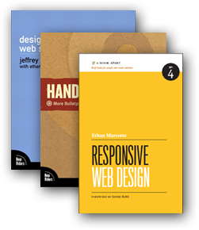
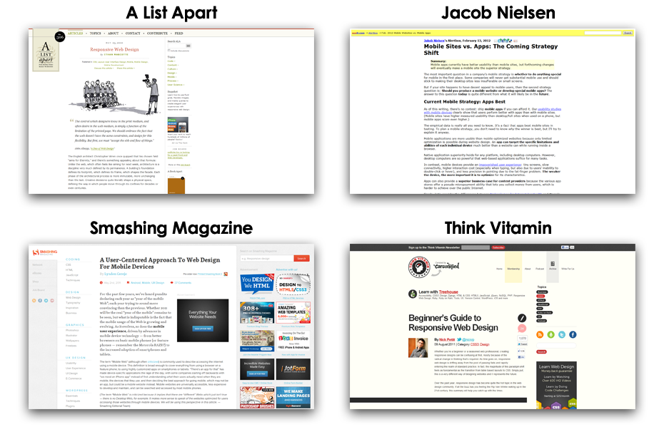

Use the ↑, →, ↓, ← keys.
Responsive Web Design
Media Queries, Fluid Layouts and graphics
What does "Responsive Web Design" mean?
- Designing for multiple device resolutions (computer screens, phones, tablets, tvs, etc.)
The technique:
- Detect device resolution with CSS3 Media Queries
- Write resolution specific CSS
- Use fluid grids and images for all other resolutions
Media Query example
This CSS rule only applies to small screens
@media screen and (max-width: 600px) {
.class {
background: #ccc;
}
}
This manages viewport zoom on WebKit browsers
<meta name="viewport" content="width=960px; user-scalable=1;">
Ethan Marcotte
- Coined the phrase in the ALA article: "Responsive Web Design"
- Author, speaker, designer

Examples:
Non-examples of responsive design:
Using browser detection to serve a completely different code base.
Pros & Cons
- Great UX potential
- One code base
- Future-proof
Pros:
- Difficult on complex sites
- Multiple design iterations
- CSS can become complex
Cons:
Responsive Design vs. Web App vs. Native App?
- Responsive = unified code base
- Web App = more robust
- Native = more performant
- Based on business needs
- More design, dev, and testing = $$$
Reading
Assignment
Begin applying responsive design techniques to your website.